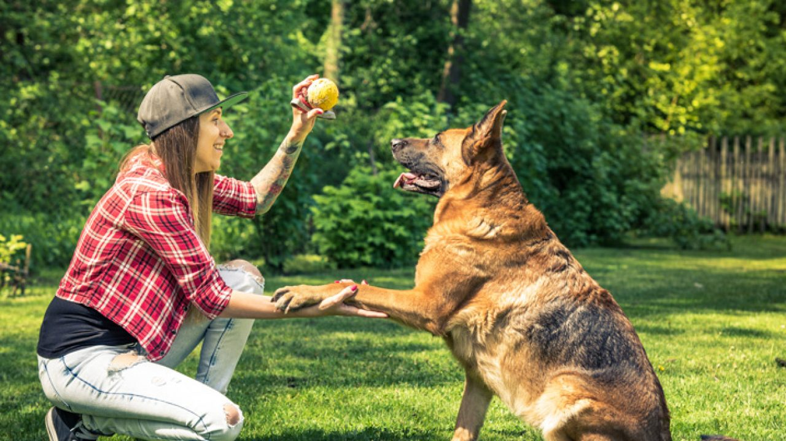

Diaurio de Notícias
Novidades
Saúde
Eventos
Cães e Gatos
Outros Animais

Segundo o adestrador de Sorocaba (SP), cada atividade do treinamento deve ser aplicada respeitando as necessidades e a saúde de cada animal.
Adestramento ajuda a diminuir estresse e ansiedade nos cães, diz especialista
7 fatos curiosos sobre seu gato que vão te deixar de queixo caído

Raiva canina: saiba onde vacinar cães e gatos em Sorocaba e Jundiaí

Depressão canina: entenda as manifestações e como lidar com a doença
Diaurio de Notícias © 2023